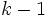
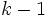

Algorithmus (kwanova)
Die Vorgehensweise unten basiert auf NAG-Algorithmen.
- Ordnen Sie alle Beobachtungen nach Rängen in aufsteigender Reihenfolge. Die durchschnittlichen Ränge werden zugeordnet, um die Werte zu verbinden.
- Addieren Sie die Ränge der Beobachtungen in jeder Gruppe, um die Rangsumme zu bestimmen
 für
für
- Die Kruskal-Wallis-Teststatistik wird berechnet mit:, wobei , d.h., die Gesamtanzahl der Beobachtungen ist. Gibt es verbundene Werte, wird durch Teilen von korrigiert, wobei die Anzahl der verbundenen Werte in einer Gruppe ist und die Summe die Gesamtheit der verbundenen Gruppen.
Das Signifikanzniveau basiert auf der Verteilung  mit Freiheitsgraden.
mit Freiheitsgraden.
Weitere Einzelheiten zu dem Algorithmus finden Sie unter nag_kruskal_wallis_test (g08afc).